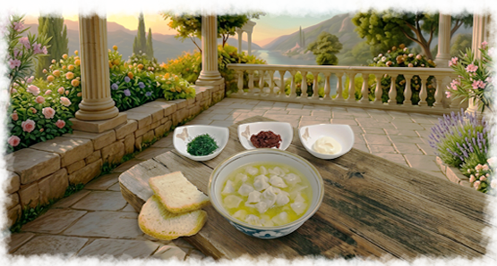
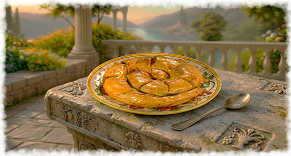
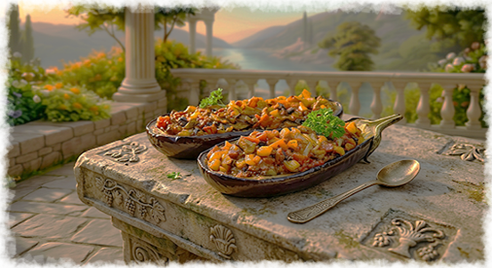

Кухня народа
Кубэтэ - традиционный крымскотатарский пирог с начинкой из мяса, картофеля и лука,
выпекаемый на слоёном или дрожжевом тесте. Он символизирует гостеприимство, семейное
единство и уважение к культурным традициям.
Буза - сладкий, в меру газированный, густой ферментированный напиток. Готовили методом
брожения на основе сусла из проса, хотя известны разновидности из кукурузы, пшеницы, овса.

Юфакъ аш - суп из очень маленьких пельменей с мясной начинкой (обычно баранина)
в наваристом бульоне. характерная черта блюда — миниатюрные изделия. Блюдо считается
показательным для хозяйки — чем мельче пельмени, тем искуснее хозяйка;
Сарма — это рулетики из виноградных листьев внутри которых находится начинка из баранины
или говядины, риса, зелени и специй. Обычно подают как закуску или как основное блюдо в
виде тарелки с соусом или йогуртом.

Бурма представляет собой тестовую заготовку - рулет, где тонко раскатанное тесто
оборачивает мясной фарш. Традиционный метод приготовления включает запекание в духовке
или приготовление на пару; на Южном берегу Крыма встречается вариант с тыквой и
орехами..
Бекмез — сладость времени и земли: смесь яблочного, грушевого, виноградного и шелковичного
сока превращали в жидкую росу, раскладывая мелодию вкуса. Фрукты превращали в
пюре деревянными толкушками, выжимали сок и томили на открытом огне до янтарной
густоты, напоминающей мед.

Щербет (правильнее — шербет, от арабского sharbāt — «прохладительный напиток») — традиционный
восточный напиток, который действительно может готовиться на основе мёда. Его подавали в
хрустальных стаканчиках на торжествах и важных встречах.
Имам-баялды представляют собой баклажаны, начинённые смесью овощей (перец, помидор, лук, чеснок)
и ароматной зеленью с добавлением изюма. Этим блюдом славятся в регионе, а имя восходит к
легенде о имаме, который, ощутив аромат, якобы потерял сознание от удовольствия.